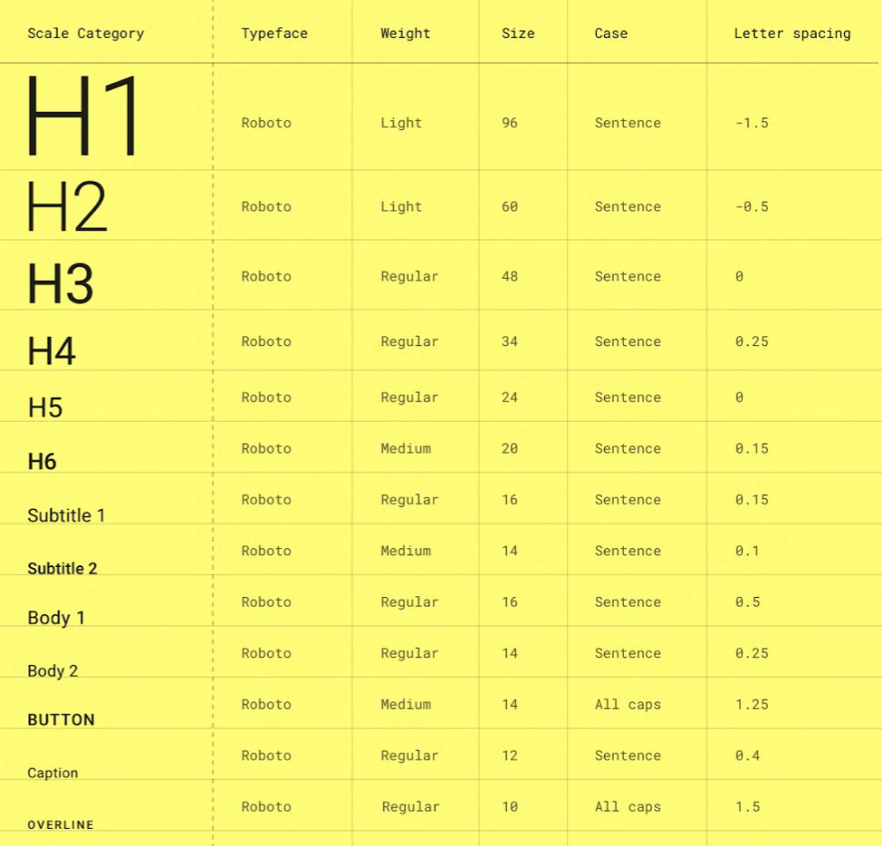

Building Responsive Layouts with DIVs, Flexbox, and CSS Grids
Week 6
This week's lectures provided insights into creating responsive website layouts using DIVs, Flexbox, and CSS Grids. The DIVs tutorial demonstrated structuring page content in containers and applying customized CSS styling. Understanding parent-child relationships and properties like "display: flex" cemented key concepts. The Flexbox lecture expanded skills in alignment, justification, sizing, and positioning of elements. It provided experience adjusting properties like "justify-content" and "align-self" to control layouts. The CSS Grids lesson illustrated defining template areas and linking them to visual sections. Following the step-by-step demo instructions helped me get a better understanding of what I needed to do The lectures emphasized responsive design, including secondary axes alignment techniques. This reinforced the importance of adaptability across devices. Overall, the lectures provided useful practical knowledge for structuring responsive, organized website interfaces. I now feel capable of using DIVs, Flexbox, and CSS Grids for layouts. The balanced explanations, examples, and coding practice supported concept comprehension. Moving forward, I look to reinforce this learning by applying the skills in web projects. As we cover advanced responsive design, I aim to build on this foundational layout knowledge. The lectures provided important building blocks for acquiring web development abilities.
